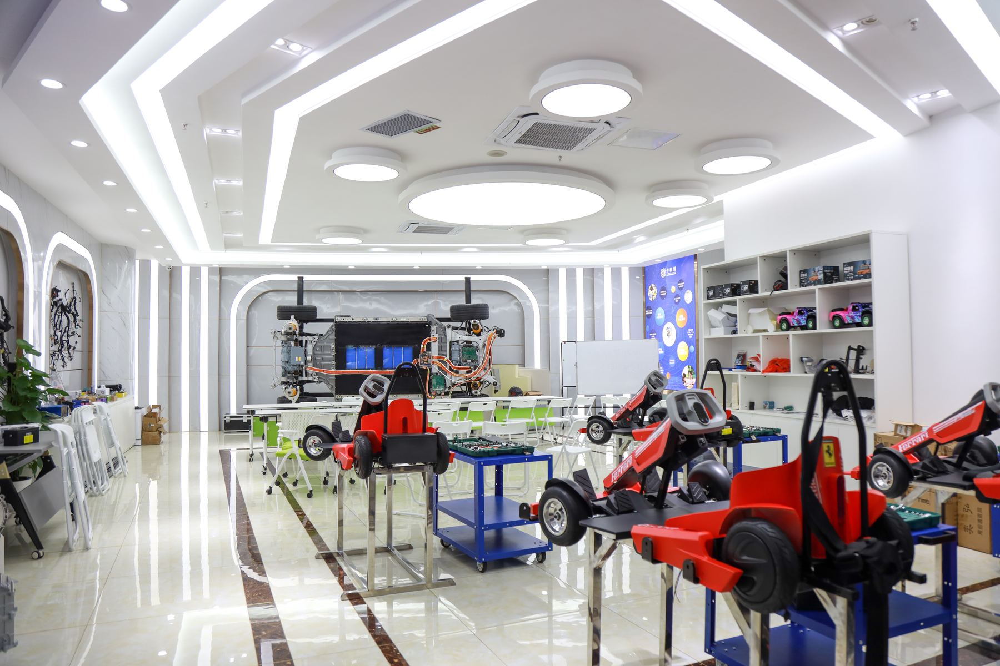
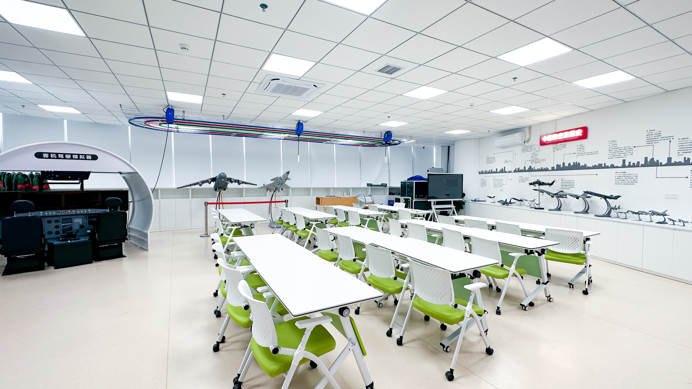
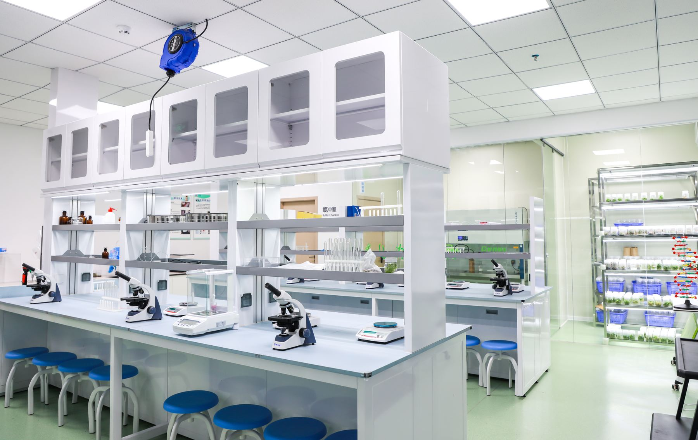
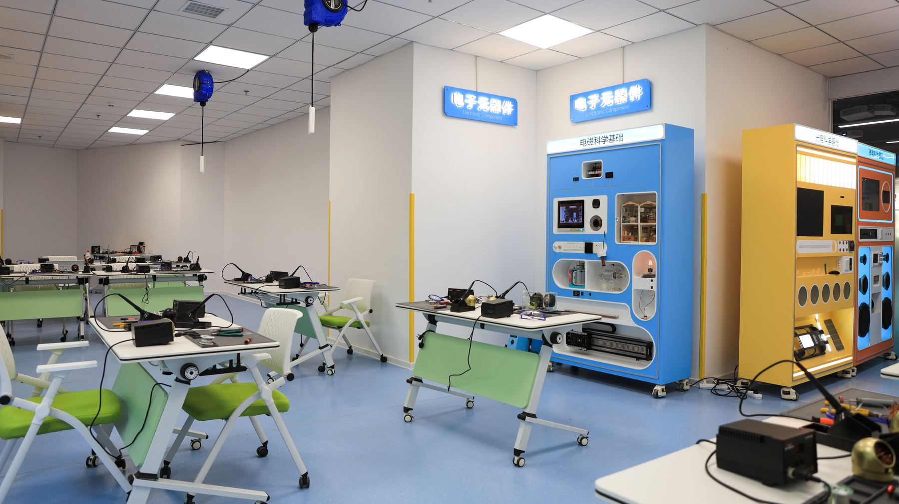
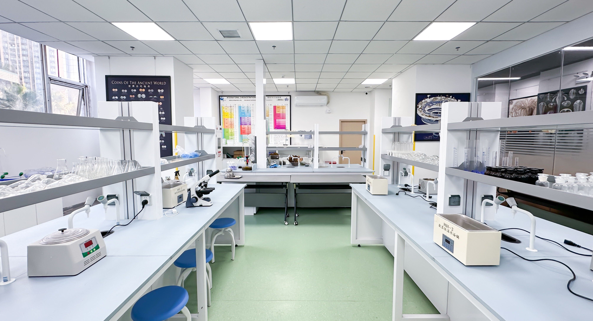
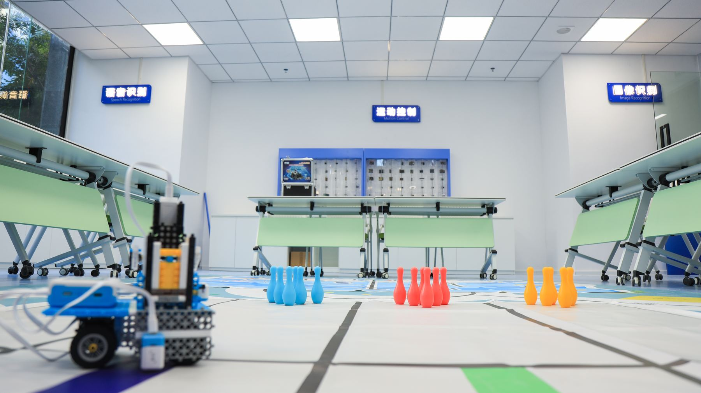
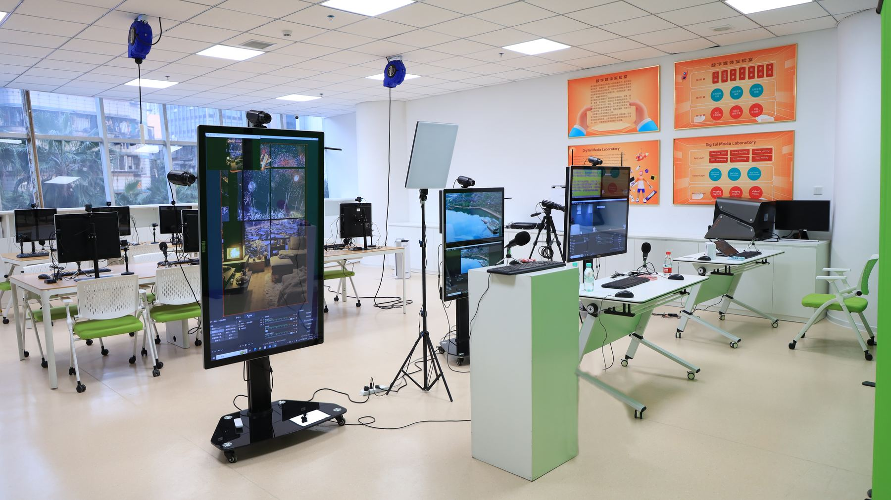

01
新能源汽车实验室
孩子将在新能源交通场景中理解动力、电池、传感器与智能控制，通过模型搭建、结构测试和任务挑战，认识未来汽车如何从能源效率走向智能出行。
- 新能源动力与电池认知
- 智能传感与车辆控制
- 模型搭建和任务挑战


02
航空航天实验室
围绕飞行器、火箭、卫星与空间探索展开实践，让孩子在结构设计、空气动力、发射模拟和任务协作中，体验航天工程的真实思维。
- 飞行器结构设计
- 火箭发射与任务模拟
- 航天工程协作思维
03
生命基因实验室
从生命科学观察、显微实验、基因认知和健康科技入手，帮助孩子理解生命系统的奥秘，在安全实验中培养科学观察与证据意识。
- 显微观察和生命实验
- 基因认知与健康科技
- 证据意识和科学记录


04
电子科技实验室
通过电路搭建、传感器应用、编程控制和创意装置制作，让孩子把抽象的电子知识变成可以点亮、驱动和交互的真实作品。
- 基础电路与传感应用
- 编程控制和交互装置
- 从原理到作品制作
05
高新材料实验室
探索材料的强度、导电、耐热、轻量化与环保特性，让孩子通过实验比较和应用设计，理解新材料如何改变工程、生活与未来产业。
- 材料性能实验比较
- 轻量化和环保材料探索
- 面向真实应用的设计


06
人工智能实验室
从图像识别、语音交互、机器学习和智能机器人任务开始，让孩子理解 AI 如何感知、判断与行动，并学会负责任地使用智能技术。
- 图像识别和语音交互
- 机器学习基础体验
- 智能机器人任务实践
07
影视媒体实验室
结合拍摄、剪辑、数字影像、虚拟表达和科技传播，让孩子把科学想法转化为影像作品，培养表达力、审美力与项目协作能力。
- 拍摄剪辑和数字影像
- 科技主题表达训练
- 项目协作和作品呈现
